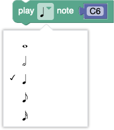
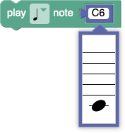
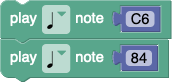
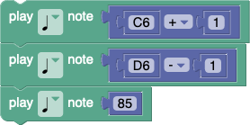
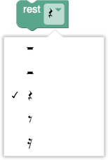
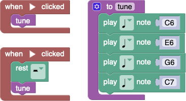

The glockenspiel has 25 notes, just over two octaves. Here are the available notes and their standard numeric MIDI values:
| A5 | 81 |
| A♯5/B♭5 | 82 |
| B5 | 83 |
| C6 | 84 |
| C♯6/D♭6 | 85 |
| D6 | 86 |
| D♯6/E♭6 | 87 |
| E6 | 88 |
| F6 | 89 |
| F♯6/G♭6 | 90 |
| G6 | 91 |
| G♯6/A♭6 | 92 |
| A6 | 93 |
| A♯6/B♭6 | 94 |
| B6 | 95 |
| C7 | 96 |
| C♯7/D♭7 | 97 |
| D7 | 98 |
| D♯7/E♭7 | 99 |
| E7 | 100 |
| F7 | 101 |
| F♯7/G♭7 | 102 |
| G7 | 103 |
| G♯7/A♭7 | 104 |
| A7 | 105 |
There are three different ways to compose music for the glockenspiel:
There are five options for the length of each note. From top to bottom, they are whole notes, half notes, quarter notes (the default), eighth notes, and sixteenth notes.

A note's pitch can be changed by either typing its name ('A5' - 'A7') or by choosing the note value on a staff. Note that this UI only allows for the selection of the 15 natural pitches (not sharps or flats).

Alternatively, the pitch block can be replaced by a number block which specifies MIDI value (81-105) of the pitch. The following example shows two quarter notes of the same pitch being played back to back.

In order to play a sharp or flat pitch, one can increment or decrement a pitch block, or specify the pitch's MIDI value directly. The following example shows three C♯6 or D♭6 quarter notes played in a row.

A pause in the music is called a rest. Rests come in the same lengths as notes. From top to bottom, they are whole rests, half rests, quarter rests (the default), eighth rests, and sixteenth rests.

Use a "when ▶ clicked" event handler to start code executing. One can create up to four of these handlers, allowing for multiple simultaneous threads. Below is a two-threaded program that plays the same four-note tune as a round.

Any program built with Blockly can be seen in its JavaScript form. However, once one edits the JavaScript, it is not possible to go back to Blockly, except by either deleting the entire program.
TODO: Neil
(Seriously, what did you expect?)